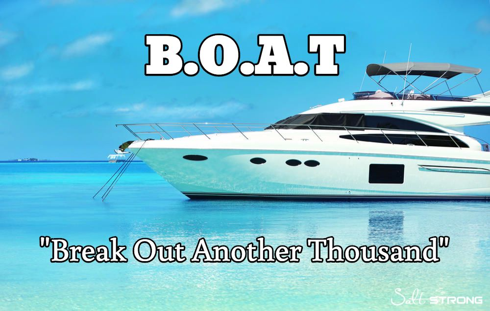

For many people owning a boat is a dream come true. It is often said the two happienst days of owning a Boat is the day you buy it and the day you sell it. Here on this website we would like to help you do both.
With a little patience and the right amount of planning, you too can reach the goal of boat ownership. What goals would you like to obtain with your boat? Boats can have a varity of uses including, sailing, fishing, commercial, small business. It's important to buy the right boat that will fit your needs. In deed, be sure the boat you are looking at can be used to facilitate your wants and needs.
Keep in mind, buying your boat is just the beginning of your expense. It takes a lot of work, effort and money to maintain a boat properly. A common acronym for B.O.A.T is "Break Out Another Thousand." Anyone who has ever owned a boat knows that is no lie! So be sure as you price your prospective boat, you take into consideration the ongoing costs that you will incure. Remember, the bigger the boat, the more everything about it will cost.
People die every year due to boat accidents or weather related incidents. People view boats as toys and many times do not give them the respect they deserve. Just as your car can be viewed as a weapon, so can your boat. Be sure you take boat safety courses so you can be an educated boat owner. It may help you save on your insurance but even more importantly, may save your life and the lives of others.